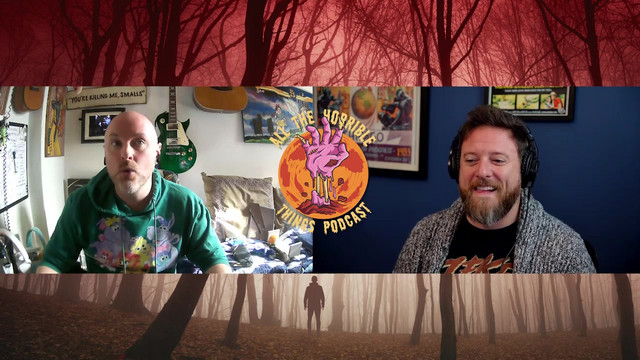

A famous author was saved by a fictional family and then wrote a novel about it
Meg Mason on Nancy Mitford, a lonely teenager, and the strangest thing to happen to this entire field this year.
The GuardianRead →
Yesterday
The Guardian ran this on the exact week Dolly Parton, Gloria Steinem and Liam Payne died. The timing is not the story. The timing proves the story.
I want to push back on the word distress in every piece that runs this week, because it is doing too much work. Losing somebody is what happens when the people you love die. If a stadium full of people are grieving Dolly Parton, that is not a malfunction, that is a very large number of people finding out that they loved her. The only unusual thing about parasocial grief is that the person could not have known you were there. That is worth being careful with. It is not worth being condescending about.
Notice, name, choose. That's the whole method.
The clerk's shelf - how this got here first

Sources
The Guardian · 28 SEP 2026
Where this sits in the encyclopedia
More from GRIEF
Meg Mason on Nancy Mitford, a lonely teenager, and the strangest thing to happen to this entire field this year.
A widely-shared explainer on why every single person has a parasocial relationship and why most of them are fine.
The pivot from a death to a discourse about ourselves, in about a day, in front of a diaspora that had to watch it happen.
ABC on the finale. It reads as a light story and it is not, particularly.